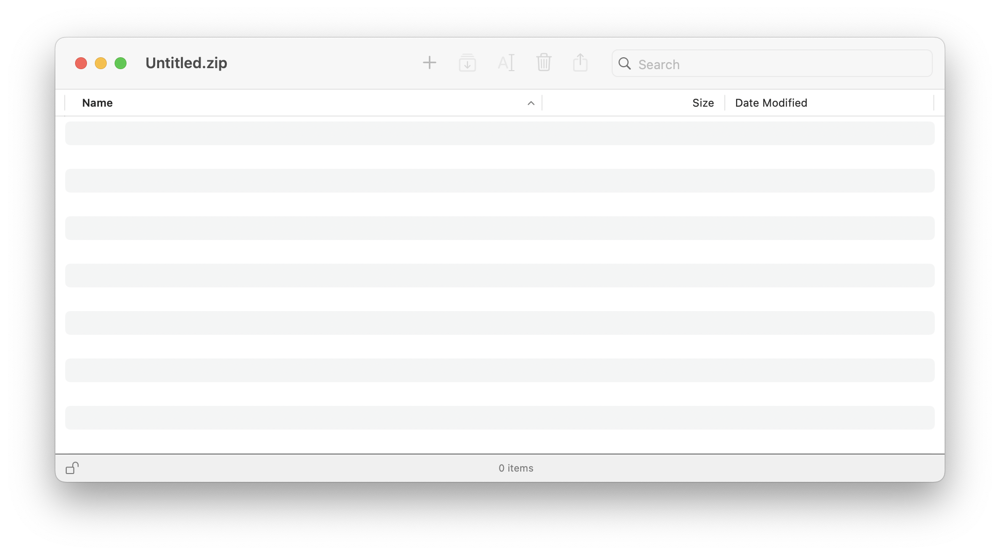

When you first launch Arkyve you will see a welcome window like the one shown below.
Click the "Create New Archive" button to open a new Archive window.
You can also use the File menu and select "New Arkyve Window".

The new archive window will then appear and look like this:

You are now ready to add some files and folders to the archive